CLIP-01 / 0–10 SEC
紅霧へ飛び込む二人
Rumia / 10秒・6カット
1秒ずつの登場から加速。ルーミアの一波を見せ、回避と反撃を続けて湖へ抜ける。
- 0.0–1.0秒霊夢の瞳
- 1.0–2.0秒魔理沙の飛び込み
- 2.0–4.0秒二人の上昇
- 4.0–6.0秒ルーミアの弾幕
- 6.0–8.5秒回避と反撃
- 8.5–10.0秒湖へ抜ける
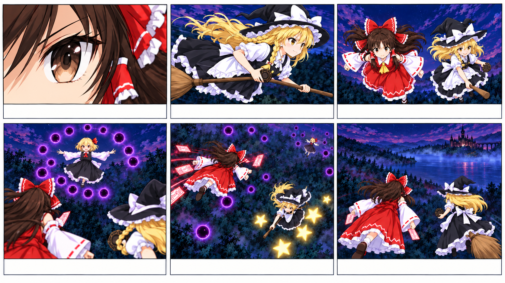
参照画像の投入順
Picture 1 characters-01-heroes.pngPicture 2
characters-01-heroes.pngPicture 2
characters-01-heroes.pngPicture 2{kind=link}
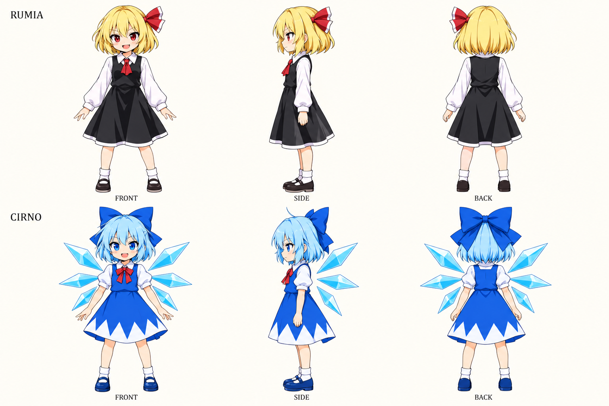
characters-02-rumia-cirno.pngPicture 3{kind=link}
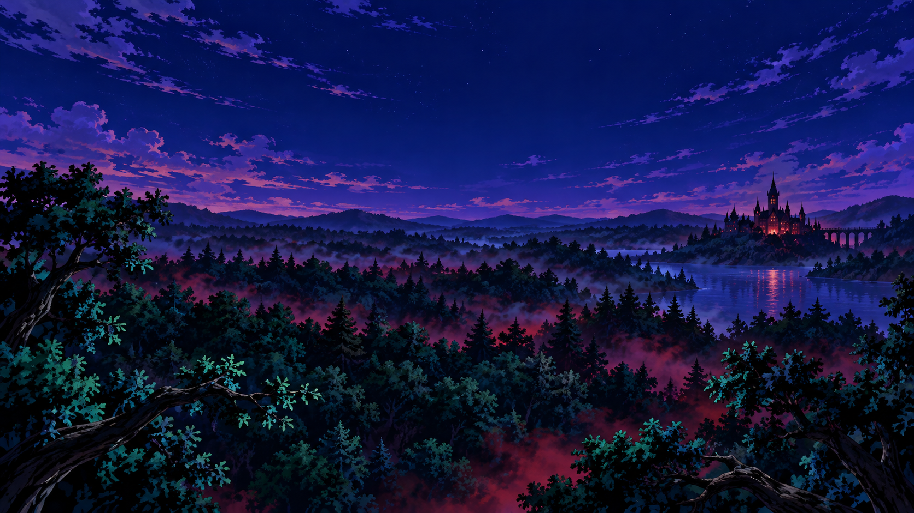
background-01-forest.pngPicture 4storyboard-01-clean-v2.png{kind=link}
English · 投入用
subject_definitions: <Subject 1> is Reimu Hakurei, the top row of <Picture 1>: long chestnut hair, brown eyes, large red-and-white hair bow, red shrine dress, yellow necktie and detached white sleeves; she flies without a vehicle and uses paper talismans. <Subject 2> is Marisa Kirisame, the bottom row of <Picture 1>: blonde hair and a side braid, amber eyes, black witch hat with white bow, black-and-white dress and apron; she rides the brown broom and channels golden stars through the small octagonal focus. <Subject 3> is Rumia, ONLY the top row of <Picture 2>: blonde bob, red eyes, small red side ribbon, black dress over a white shirt and red tie. The blue-haired character on the lower row is not present in this clip. <Subject 4> is the forest-to-lake night environment from <Picture 3>: dark emerald canopy, scarlet mist, indigo sky, distant Gothic mansion. <Picture 4> is the clean six-panel visual board for [Shot 1] through [Shot 6], read left-to-right across the top row, then the bottom row. Use it for composition and subject placement. The written shot descriptions supply camera motion, action and timing. summary: [reference generation] Create exactly 10.000 seconds of a 16:9 anime game opening. Introduce <Subject 1> and <Subject 2>, then show their airborne exchange with <Subject 3> above <Subject 4>, following <Picture 4>. End by racing toward the lake through blue mist. This is the opening quarter of a 40-second sequence. Use the model sheets for each character’s identity and the clean six-panel board for composition. Every shot fills one 16:9 frame with the scene itself. Faces, anatomy and costumes remain consistent; each character appears once within the scene. Reimu and Marisa retain calf-length skirts from the model sheet even in flight. Use two one-second character introductions, accelerate into a readable attack and counterattack, then exit in one fast chase. retention_analysis: <Subject 1> (appears in [Shot 1], [Shot 3], [Shot 4], [Shot 5], [Shot 6]): fully_preserved - retain the model-sheet identity, proportions, colors and clothing in every moving view. <Subject 2> (appears in [Shot 2], [Shot 3], [Shot 4], [Shot 5], [Shot 6]): fully_preserved - retain the single hat, side braid, apron and broom; never exchange her features with Reimu. <Subject 3> (appears in [Shot 4], [Shot 5]): fully_preserved - keep Rumia distinct, with no ice wings or blue costume. <Subject 4> (appears throughout): fully_preserved - preserve forest, mist and distant landmarks while changing viewpoint. <Picture 4> (six-shot planning reference): partially_preserved - Keep panel order and action staging; use the written shot directions for exact camera height, motion and timing, and the model sheets for costume length. detailed_description: Hand-drawn 2D anime, crisp cel shadows, painted backgrounds, controlled motion blur, readable flight lanes. Single-screen 16:9. [Shot 1] An extreme close-up catches <Subject 1>'s steady brown eye beneath chestnut bangs; a thin scarlet mist reflection slides over it. The camera pulls back quickly to a chest-up three-quarter view, revealing her red hair bow and white detached sleeves as she hovers above <Subject 4>'s treetops. Her talisman is already raised as she turns right; a crisp paper snap lands on the cut. [Shot 2] At 00:01.000, the camera cuts to a low side-tracking view of <Subject 2> sweeping rightward on her broom, slightly below the canopy horizon. Her blonde side braid trails behind, one hand holds the brim and the other controls the broom. Already leaning forward, she flashes a confident closed-mouth grin. Nearby leaves rush past the lens while her face remains sharp; a rising broom whoosh crosses from left to right. [Shot 3] At 00:02.000, the camera cuts to a low frontal wide shot flying backward ahead of both heroines. <Subject 1> holds screen-left, <Subject 2> screen-right, a full body-width between them. They climb together above the forest, then bank toward a dark opening in the mist. A restrained 20-degree clockwise camera roll follows their shared bank and returns level. Keep their silhouettes legible against the indigo sky. Cloth snaps and rushing air swell naturally. [Shot 4] At 00:04.000, the camera cuts to an over-shoulder view behind the pair. <Subject 3> floats clearly visible in the upper center, her blonde bob, red ribbon and black dress outlined in violet light. She opens both arms, emitting one expanding ring of dark-violet luminous orbs with a visible lower-right gap. The camera pushes toward that gap; the ring advances toward the heroines. Add a hollow magical pulse and individual passing bullet whistles. [Shot 5] At 00:06.000, the camera cuts above the ring, looking obliquely down. <Subject 1> slips edge-on through the gap and sends a fan of white-red talismans toward <Subject 3>; one small sector of orbs breaks into sparks. <Subject 2> dives through that cleared sector on her broom, returning a short golden star volley. The camera cranes downward with them, never losing the gap's location. Rumia remains airborne and unhurt in the background; show an exchange, not a victory. Crisp talisman snaps and tiny crackles punctuate the dodge. [Shot 6] At 00:08.500, the camera cuts to a rear chase view as the pair accelerate rightward away from the forest toward the distant lake. Branches fall below frame and cyan mist rises ahead. Preserve Reimu left and Marisa right. Blue mist softly covers the frame during the last 0.300 seconds, giving the next clip a lake-colored visual handoff. Continue the wind and finish at 00:10.000 without a fade to black. overall_soundscape: Only environmental and action sound: wind, cloth, paper flutters, broom air displacement, hollow magical pulses and short bullet crackles. Keep perspective and stereo movement synchronized to visible sources. No speech, shouts, breathing performance, lyrics, melodic chimes, rhythmic accompaniment or music. non_diegetic_music: None. No background music, score, song or musical accompaniment at any point.
日本語 · 確認用
subject_definitions: <Subject 1> は <Picture 1> 上段の博麗霊夢。長い栗色の髪、茶色の瞳、大きな赤白の髪リボン、赤い巫女服、黄色の胸元の結び、白い分離袖を保つ。乗り物なしで飛び、札を使う。 <Subject 2> は <Picture 1> 下段の霧雨魔理沙。金髪と片側の編み込み、琥珀色の瞳、白いリボン付きの黒い魔女帽子、黒白の衣装とエプロンを保つ。茶色い箒に乗り、小さな八角形の魔法の道具から金色の星弾を放つ。 <Subject 3> は <Picture 2> 上段だけのルーミア。金髪ボブ、赤い瞳、小さな赤い横リボン、白シャツと赤いネクタイ、黒いワンピース。下段の青髪の人物はこのクリップには登場させない。 <Subject 4> は <Picture 3> の夜の森から湖へ続く環境。暗緑色の樹冠、紅霧、藍色の空、遠くのゴシック様式の館。 <Picture 4> は [Shot 1]〜[Shot 6] に対応するクリーンな6コマ画像。上段左から右、下段左から右の順で読む。構図と人物配置を参照し、カメラの動き・動作・時刻は各カットの文章で指定する。 summary: [reference generation] 全40秒の第1部として、16:9・正確に10.000秒のアニメゲームOPを作る。<Picture 4> に沿って <Subject 1> と <Subject 2> が登場し、<Subject 4> 上空で <Subject 3> と弾幕を交わす。最後は青い霧を抜け、湖へ向かう。 設定画は各人物の同一性、クリーンな6コマ画像は構図の参照に使う。各カットを16:9いっぱいの一つの情景として描く。顔、人体、衣装を維持し、一つの場面の各人物は一人ずつにする。 霊夢と魔理沙のスカートは、飛行中も三面図にあるふくらはぎ丈で固定する。 1秒ずつの登場から加速。ルーミアの一波を見せ、回避と反撃を続けて湖へ抜ける。 retention_analysis: <Subject 1>（[Shot 1], [Shot 3], [Shot 4], [Shot 5], [Shot 6]）：fully_preserved - 設定画の顔、体格、配色、衣装を全方向で維持する。 <Subject 2>（[Shot 2], [Shot 3], [Shot 4], [Shot 5], [Shot 6]）：fully_preserved - 帽子は1つ、編み込み、エプロン、箒を維持し、霊夢と特徴を混ぜない。 <Subject 3>（[Shot 4], [Shot 5]）：fully_preserved - ルーミアの特徴を維持し、氷の翼や青い衣装を付けない。 <Subject 4>（全編）：fully_preserved - 視点を変えながら森、霧、遠景のランドマークを保つ。 <Picture 4>（6カットの演出参照）：partially_preserved - コマ順と動作配置を保つ。正確なカメラの高さ・動き・時刻は各カットの文章を優先し、衣装の丈は三面図に合わせる。 detailed_description: 手描き2Dアニメ。明瞭なセル影、描き込んだ背景、制御した動体ぼけ、読める飛行の通路。16:9の単一画面。 [Shot 1] 栗色の前髪の下にある <Subject 1> の茶色の瞳を極端な寄りで捉え、紅霧の細い反射を流す。カメラが素早く引いて斜め前からの胸上へ移り、赤いリボンと白い分離袖、<Subject 4> の樹冠の上で浮く姿を見せる。札を上げた状態で右を向き、鋭い紙の音に合わせて次のカットへ切る。 [Shot 2] At 00:01.000, 箒で右へ滑空する <Subject 2> を、樹冠の水平線より少し低い横位置から追うカットへ切り替える。金髪の編み込みが後ろに流れ、片手で帽子のつば、もう一方で箒を支える。前傾した姿で飛び込み、口を閉じた自信のある笑みを一瞬見せる。近景の葉だけが速く流れ、顔は明瞭。箒の風切り音を左から右へ移動させる。 [Shot 3] At 00:02.000, 二人の前方を後退するカメラによる、低い位置からの正面ワイドへ切り替える。<Subject 1> を画面左、<Subject 2> を右に置き、体一つ分の間隔を空ける。森の上へ同時に上昇し、霧の暗い切れ目へバンクする。カメラは時計回りに20度だけ傾き、水平へ戻る。藍色の空に二人のシルエットを読みやすく置き、衣擦れと風を強める。 [Shot 4] At 00:04.000, 二人の肩越しへ切り替える。上中央に浮く <Subject 3> の金髪ボブ、赤いリボン、黒い服を紫の縁光で明瞭に見せる。両腕を開き、右下に一つの隙間がある暗紫色の光弾リングを拡げる。カメラは隙間へ前進し、弾の輪は二人へ迫る。空洞感のある魔力音と個々の弾の風切り音。 [Shot 5] At 00:06.000, リング上方から斜め下を見下ろす構図へ切り替える。<Subject 1> が体を薄く傾けて隙間を抜け、<Subject 3> へ赤白の札を扇状に放つ。弾の小さな一区画だけが火花になる。<Subject 2> は箒でその空間へ潜り、短い金色の星弾を返す。カメラも下降し、隙間の位置を見失わせない。背景のルーミアは無傷で浮いたまま。撃破ではなく応酬を見せる。札の鋭い音と小さな魔力の破裂音。 [Shot 6] At 00:08.500, 森から遠くの湖へ右向きに加速する二人を背後から追うカットへ切り替える。枝が画面下へ消え、前方に水色の霧が立ち上がる。霊夢を左、魔理沙を右に保つ。最後の0.300秒で青い霧が画面を柔らかく覆い、次の湖のカットへ色をつなぐ。風を継続し、暗転せず00:10.000で終了する。 overall_soundscape: 環境音と動作音のみ。風、衣擦れ、札、箒の風切り、空洞感のある魔力音、短い弾の破裂音。距離感と左右移動を画面内の音源へ同期する。台詞、掛け声、演技の吐息、歌詞、旋律的な鐘、伴奏、音楽は入れない。 non_diegetic_music: なし。全編を通してBGM、劇伴、歌、音楽の伴奏を入れない。
CLIP-02 / 10–20 SEC
氷の湖から紅魔館の門へ
Cirno · Hong Meiling / 10秒・6カット
氷の破裂で門の槍先へ切り替える。美鈴の掌打から交差まで速くつなぎ、入口で色を替える。
- 0.0–2.0秒チルノの氷陣
- 2.0–4.0秒水面すれすれの反撃
- 4.0–5.0秒美鈴を見上げる
- 5.0–7.0秒掌の弾幕をかわす
- 7.0–8.5秒二人の交差
- 8.5–10.0秒館の入口へ
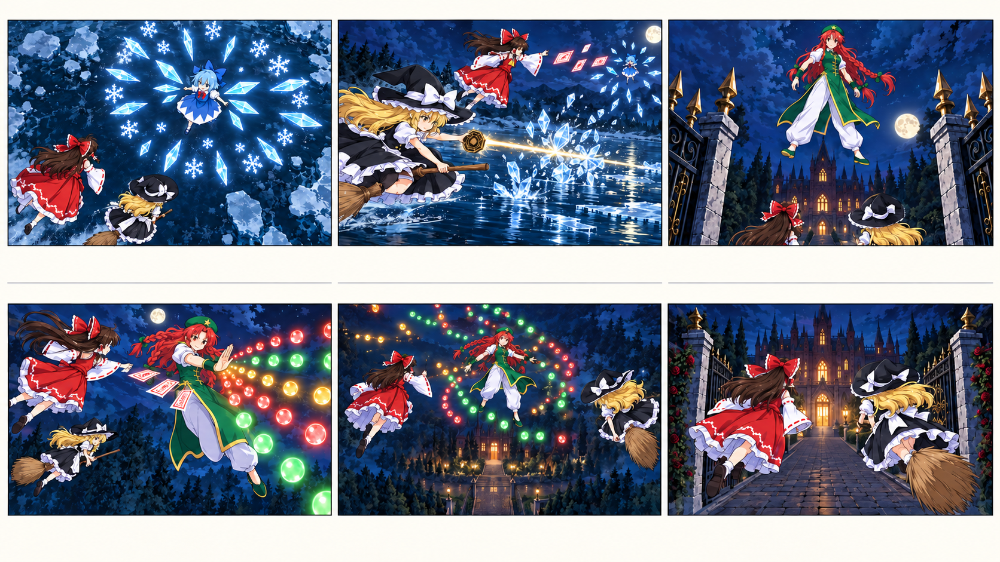
参照画像の投入順
Picture 1characters-01-heroes.pngPicture 2characters-02-rumia-cirno.pngPicture 3 characters-03-meiling-clean.pngPicture 4
characters-03-meiling-clean.pngPicture 4
characters-01-heroes.pngPicture 2characters-02-rumia-cirno.pngPicture 3characters-03-meiling-clean.pngPicture 4{kind=link}
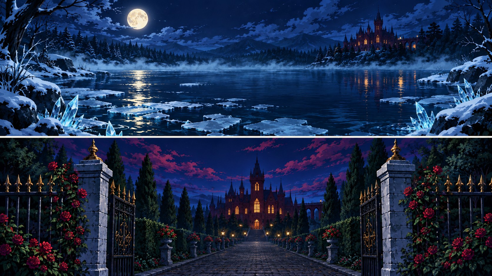
background-02-lake-gate.pngPicture 5storyboard-02-clean-v2.png{kind=link}
English · 投入用
subject_definitions: <Subject 1> is Reimu, top row of <Picture 1>: chestnut hair, red-and-white bow and shrine dress, detached white sleeves, yellow tie, free flight and white-red talismans. <Subject 2> is Marisa, bottom row of <Picture 1>: blonde side braid, amber eyes, black hat with white bow, black-and-white apron dress, brown broom and octagonal magical focus. <Subject 3> is Cirno, ONLY the bottom row of <Picture 2>: ice-blue bob, blue bow and dress, red neck ribbon, zigzag white hem and exactly six rigid ice-wing shards. The upper-row character does not appear. <Subject 4> is Hong Meiling from <Picture 3>: red hair with twin braids, green star beret, green gold-trimmed tunic, loose white trousers and green wrist guards. <Subject 5> is the moonlit lake in the TOP panel of <Picture 4>: dark blue water, icy banks and cyan mist. <Subject 6> is the mansion gate in the BOTTOM panel of <Picture 4>: gold-tipped black ironwork, stone posts, roses and the distant red mansion. <Picture 5> is the clean six-panel visual board for [Shot 1] through [Shot 6], read left-to-right across the top row, then the bottom row. Use it for composition and subject placement. The written shot descriptions supply camera motion, action and timing. summary: [reference generation] Generate exactly 10.000 seconds in 16:9, the second quarter of the opening. <Subject 1> and <Subject 2> exchange airborne danmaku with <Subject 3> above <Subject 5>, then with <Subject 4> above <Subject 6>. Use <Picture 5> for six readable action cuts and end at the mansion entrance. Use the model sheets for each character’s identity and the clean six-panel board for composition. Every shot fills one 16:9 frame with the scene itself. Faces, anatomy and costumes remain consistent; each character appears once within the scene. Reimu and Marisa retain calf-length skirts from the model sheet even in flight. Cut sharply from shattered ice to the gate reveal; keep the palm strike, evasive crossing and doorway exit brisk. retention_analysis: <Subject 1> (all shots): fully_preserved - fixed identity, free flight, red-and-white silhouette and paper projectiles. <Subject 2> (all shots): fully_preserved - fixed identity, broom flight, hat and golden magical shots. <Subject 3> ([Shot 1], [Shot 2]): fully_preserved - retain six ice-wing shards; airborne ice needles are separate projectiles, not growing wings. <Subject 4> ([Shot 3], [Shot 4], [Shot 5]): fully_preserved - retain twin braids and white trousers, with no costume swap. <Subject 5> ([Shot 1], [Shot 2]): fully_preserved - use only the lake panel's scenery. <Subject 6> ([Shot 3] through [Shot 6]): fully_preserved - use only the gate panel's architecture. <Picture 5> (six-shot planning reference): partially_preserved - Keep panel order and action staging; use the written shot directions for exact camera height, motion and timing, and the model sheets for costume length. detailed_description: Hand-drawn 2D anime, crisp cel shadows, painted backgrounds, controlled motion blur, readable flight lanes. Single-screen 16:9. [Shot 1] Cyan mist clears to a steep overhead wide shot of <Subject 5>. <Subject 3> hovers above the lake center, identifiable by her blue dress and six rigid ice-wing shards. She spreads one rotating snowflake-shaped formation of ice needles across the water's reflection. <Subject 1> and <Subject 2> enter from lower-left, separated vertically, and peel around opposite edges of a clear lane. The camera descends in a small clockwise arc; brittle ice creaks and a cold wind replace the forest air. [Shot 2] At 00:02.000, the camera cuts to water level, tracking right beside <Subject 2>. She banks her broom through a controlled quarter-roll and fires a narrow golden ray from the focus in her free hand; it breaks a small cluster of ice needles ahead, not Cirno's wings. A spray of harmless glitter skips across the water. <Subject 1> sweeps overhead and returns an arcing row of talismans toward <Subject 3>, who dodges upward. Keep the attack, opening and escape legible. Add a short ray hiss, crystal fractures and a reflected water slap. [Shot 3] At 00:04.000, the camera cuts on an ice needle's pointed silhouette to a gold spear-tip on <Subject 6>'s gate. A fast upward tilt clears the ironwork and reveals <Subject 4> already levitating above the gate, green tunic and loose white trousers visibly distinct. The two heroines streak into the lower foreground. Rose bushes and the approach remain far beneath them; this is an aerial encounter. A brief rush of leaves gives way to a low palm-energy thump. [Shot 4] At 00:05.000, the camera cuts to a medium-wide side view. <Subject 4> rotates her shoulders and thrusts one palm, releasing a curved fan of multicolored light bullets. <Subject 1> glides laterally just outside its leading edge, turns her wrist and sends three bright talismans back through a stable gap. <Subject 2> climbs behind Reimu toward the other flank. The camera arcs briskly through 30 degrees around the exchange, maintaining Meiling on the far side. Synchronize palm impact, paper snaps and passing projectile whistles. [Shot 5] At 00:07.000, the camera cuts to a wide diagonal view above the gate. <Subject 1> rises left while <Subject 2> dives right, drawing two curved light trails around <Subject 4>'s expanding fan. They then converge beyond the gap, their paths never colliding. Meiling remains centered, guarding the entrance and turning to follow them, undefeated. A compact burst of stars meets colored bullets between them; the scenery remains intact. [Shot 6] At 00:08.500, the camera cuts behind the reunited pair rushing through the open outer gate toward the mansion's open doorway. Keep their motion forward and right; the camera accelerates with them just above the path without either heroine landing. A warm doorway glow fills the center during the last 0.300 seconds, ready to match the next clip's candlelight. Wind gains a subtle indoor echo. End at 00:10.000. overall_soundscape: Cold lake wind, ice cracks, splashes, broom whooshes, talisman paper, short magical ray hiss and soft palm-burst impacts, with a small doorway echo at the end. No voices, dialogue, singing, score, tonal musical pulses or percussion track. non_diegetic_music: None. No background music, score, song or musical accompaniment at any point.
日本語 · 確認用
subject_definitions: <Subject 1> は <Picture 1> 上段の霊夢。栗色の髪、赤白のリボンと巫女服、白い分離袖、黄色い胸元の結び。自力飛行と赤白の札。 <Subject 2> は <Picture 1> 下段の魔理沙。金髪の片側編み込み、琥珀色の瞳、白リボン付き黒帽子、黒白のエプロン衣装、茶色の箒と八角形の魔法の道具。 <Subject 3> は <Picture 2> 下段だけのチルノ。水色ボブ、青い髪リボンと服、赤い胸リボン、白い山形の裾、左右3本ずつ計6本の硬い氷の翼。上段の人物は登場しない。 <Subject 4> は <Picture 3> の紅美鈴。赤髪の二本の編み込み、星付き緑帽、金縁の緑の長衣、ゆったりした白ズボン、緑の手甲。 <Subject 5> は <Picture 4> 上段の月夜の湖。濃い青の水、氷岸、水色の霧。 <Subject 6> は <Picture 4> 下段の館の門。金の槍先付き黒い鉄柵、石柱、バラ、遠景の赤い館。 <Picture 5> は [Shot 1]〜[Shot 6] に対応するクリーンな6コマ画像。上段左から右、下段左から右の順で読む。構図と人物配置を参照し、カメラの動き・動作・時刻は各カットの文章で指定する。 summary: [reference generation] OP第2部として16:9・正確に10.000秒を生成。<Subject 1> と <Subject 2> が <Subject 5> の上空で <Subject 3>、続いて <Subject 6> の上空で <Subject 4> と弾幕を交わす。<Picture 5> に沿う6カットで動作を読みやすく示し、館の入口へ至る。 設定画は各人物の同一性、クリーンな6コマ画像は構図の参照に使う。各カットを16:9いっぱいの一つの情景として描く。顔、人体、衣装を維持し、一つの場面の各人物は一人ずつにする。 霊夢と魔理沙のスカートは、飛行中も三面図にあるふくらはぎ丈で固定する。 氷の破裂で門の槍先へ切り替える。美鈴の掌打から交差まで速くつなぎ、入口で色を替える。 retention_analysis: <Subject 1>（全カット）：fully_preserved - 顔、自力飛行、赤白の輪郭、紙の弾を固定する。 <Subject 2>（全カット）：fully_preserved - 顔、箒飛行、帽子、金色の魔法弾を固定する。 <Subject 3>（[Shot 1], [Shot 2]）：fully_preserved - 氷の翼は6本。空中の氷針は弾であり、翼が増えたものではない。 <Subject 4>（[Shot 3], [Shot 4], [Shot 5]）：fully_preserved - 二本の編み込みと白いズボンを維持し、衣装を取り違えない。 <Subject 5>（[Shot 1], [Shot 2]）：fully_preserved - 湖のコマの景観のみ使用。 <Subject 6>（[Shot 3]〜[Shot 6]）：fully_preserved - 門のコマの建築のみ使用。 <Picture 5>（6カットの演出参照）：partially_preserved - コマ順と動作配置を保つ。正確なカメラの高さ・動き・時刻は各カットの文章を優先し、衣装の丈は三面図に合わせる。 detailed_description: 手描き2Dアニメ。明瞭なセル影、描き込んだ背景、制御した動体ぼけ、読める飛行の通路。16:9の単一画面。 [Shot 1] 水色の霧が晴れ、<Subject 5> を急角度で俯瞰するワイドから始める。湖の中央に <Subject 3> が浮き、青い衣装と6本の氷の翼を明瞭に見せる。水面の反射に重なるように、回転する雪結晶型の氷針の陣を一つ展開する。<Subject 1> と <Subject 2> が左下から高低差をつけて入り、一つの安全な通路の両縁へ分かれる。カメラは小さく時計回りに弧を描き下降。氷の軋みと冷たい風へ音を切り替える。 [Shot 2] At 00:02.000, 水面すれすれで <Subject 2> と並走する右向きのカットへ切り替える。箒を四分の一回転だけ傾け、空いた手の道具から細い金色の光線を放つ。前方の氷針の小さな一群だけを砕き、チルノの翼には当てない。無害な光片が水をかすめる。<Subject 1> は頭上を横切り、<Subject 3> へ弧状の札を返す。チルノは上へかわす。攻撃、空いた場所、脱出を明瞭に。短い光線音、氷の破裂、水の跳ねる音。 [Shot 3] At 00:04.000, 氷針の先端から、<Subject 6> の鉄門の金の槍先へ形を合わせて切り替える。素早く上へティルトし、門の上空で浮く <Subject 4> を見せる。緑の長衣とゆったりした白ズボンを区別できるように描く。手前下から二人が飛び込む。バラと参道は足元よりはるか下に置き、空中戦と分かるようにする。葉の風切り音から、掌に魔力が集まる低い音へ。 [Shot 4] At 00:05.000, 横からのミディアムワイドへ切り替える。<Subject 4> が肩を回して片掌を突き出し、曲線状の多色の光弾の扇を放つ。<Subject 1> は先端の外を横滑りし、手首を返して固定した隙間へ3枚の札を送る。<Subject 2> は霊夢の後ろから反対側へ上昇する。カメラは素早く30度の弧を描き、美鈴を奥側に保つ。掌打の音、札、弾の風切りを同期。 [Shot 5] At 00:07.000, 門の上方を斜めに見渡すワイドへ切り替える。<Subject 1> は左へ上昇、<Subject 2> は右へ下降し、<Subject 4> の拡がる弾幕の周囲に二筋の光跡を描く。二人は隙間の向こうで合流し、軌道を衝突させない。美鈴は中央で入口を守り、向き直って追う。撃破しない。二人と美鈴の間で星弾と多色弾が小さく交差し、建物は壊れない。 [Shot 6] At 00:08.500, 合流した二人の背後へ切り替え、開いた外門をくぐり館の開いた入口へ向かう。前方やや右への進行を維持し、地面へ降りず参道上を低空で加速する。最後の0.300秒で入口の暖かな光が中央を満たし、次の蝋燭の光へつなぐ。風に室内の反響を少し加え、00:10.000で終了。 overall_soundscape: 湖の冷たい風、氷の亀裂、水しぶき、箒、札、短い魔法光線音、掌からの低い衝撃音。最後に入口の反響を少し加える。声、台詞、歌、劇伴、音程のある音楽的な脈動、打楽器の伴奏は入れない。 non_diegetic_music: なし。全編を通してBGM、劇伴、歌、音楽の伴奏を入れない。
CLIP-03 / 20–30 SEC
魔法図書館と止まる時間
Patchouli Knowledge · Sakuya Izayoi / 10秒・6カット
4.400〜5.650秒だけ時間を止めて音を落とし、再開と同時に鋭く加速する。
- 0.0–2.0秒パチュリーの魔法陣
- 2.0–4.0秒螺旋を抜けて反撃
- 4.0–5.5秒咲夜が時間を止める
- 5.5–7.5秒時間再開・ナイフ回避
- 7.5–9.0秒一撃で出口を開く
- 9.0–10.0秒紅い夜空へ
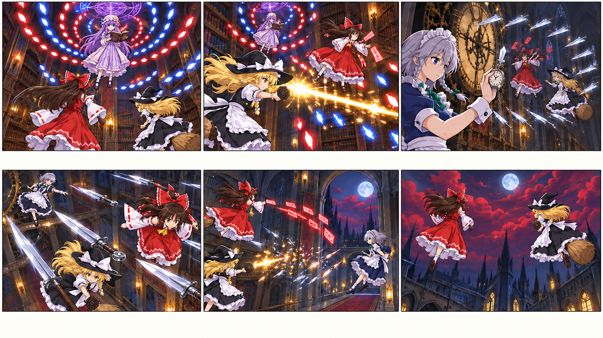
参照画像の投入順
Picture 1characters-01-heroes.pngPicture 2
characters-01-heroes.pngPicture 2{kind=link}
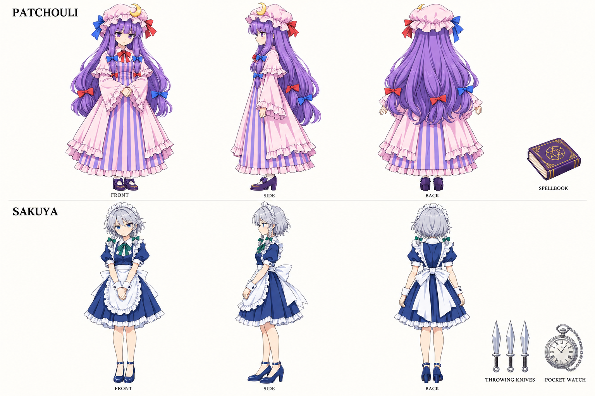
characters-04-patchouli-sakuya.pngPicture 3{kind=link}
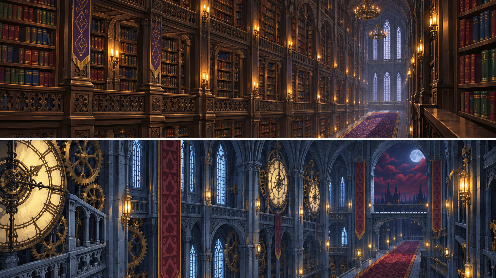
background-03-library-clock.pngPicture 4storyboard-03-clean-v2.png{kind=link}
English · 投入用
subject_definitions: <Subject 1> is Reimu, top row of <Picture 1>: chestnut hair, red bow and shrine dress, yellow tie, detached white sleeves, paper talismans and unaided flight. <Subject 2> is Marisa, bottom row of <Picture 1>: blonde side braid, black witch hat with white bow, black-and-white apron dress, brown broom and octagonal magical focus. <Subject 3> is Patchouli, top row of <Picture 2>: long purple hair, red and blue ribbons, crescent-adorned pink cap, modest pink-and-lavender striped gown and purple spellbook. <Subject 4> is Sakuya, bottom row of <Picture 2>: silver bob and small braids, blue eyes, navy maid dress, white apron, green neck bow, silver knives and pocket watch. <Subject 5> is the TOP library panel of <Picture 3>, with towering dark bookcases, candles, purple-and-gold carpet and ample aerial space. <Subject 6> is the BOTTOM clock-gallery panel of <Picture 3>, with brass clocks, blue stone arches, pale windows and red carpet. <Picture 4> is the clean six-panel visual board for [Shot 1] through [Shot 6], read left-to-right across the top row, then the bottom row. Use it for composition and subject placement. The written shot descriptions supply camera motion, action and timing. summary: [reference generation] Exactly 10.000 seconds, 16:9. Follow <Subject 1> and <Subject 2> through an airborne spell exchange with <Subject 3> in <Subject 5>, then a stopped-time knife trap from <Subject 4> in <Subject 6>, staged by <Picture 4>. Escape through an open high window into the scarlet night. Use the model sheets for each character’s identity and the clean six-panel board for composition. Every shot fills one 16:9 frame with the scene itself. Faces, anatomy and costumes remain consistent; each character appears once within the scene. Reimu and Marisa retain calf-length skirts from the model sheet even in flight. Contrast a 1.250-second stopped-time interval with an abrupt return to full-speed knife dodging and escape. retention_analysis: <Subject 1> (all shots): fully_preserved - same model and free-flight behavior; her talismans stay visually distinct from knives. <Subject 2> (all shots): fully_preserved - same costume, hat, braid, broom and focus. <Subject 3> ([Shot 1], [Shot 2]): fully_preserved - striped gown, crescent cap and spellbook remain consistent. <Subject 4> ([Shot 3], [Shot 4], [Shot 5]): fully_preserved - navy/white/green costume and silver weapon identity remain fixed. <Subject 5> ([Shot 1], [Shot 2]): fully_preserved - preserve library landmarks and scale. <Subject 6> ([Shot 3] through [Shot 6]): fully_preserved - preserve clock gallery and open exit window. <Picture 4> (six-shot planning reference): partially_preserved - Keep panel order and action staging; use the written shot directions for exact camera height, motion and timing, and the model sheets for costume length. detailed_description: Hand-drawn 2D anime, crisp cel shadows, painted backgrounds, controlled motion blur, readable flight lanes. Single-screen 16:9. [Shot 1] Warm candlelight resolves into an upward-looking wide view between <Subject 5>'s towering shelves. <Subject 3> floats in the upper center, her purple hair hanging below the crescent cap and her open spellbook held steady. One large violet spell circle develops behind the book, releasing two interleaved ribbons of blue and red bullets. <Subject 1> and <Subject 2> enter low from the left, clearly flying several meters above the carpet. The camera pushes beneath the spell circle as pages ruffle and elemental energy crackles. [Shot 2] At 00:02.000, the camera cuts to a diagonal tracking shot through the library's open air. <Subject 2> rolls her broom around the outside of one bullet helix, then releases a short golden ray from her handheld focus into its leading cluster. <Subject 1> ascends through the newly opened lane and answers with a talisman fan toward <Subject 3>. The book and shelves stay intact. Use a controlled 30-degree camera bank and strong foreground shelf parallax, keeping the heroines' faces readable. Paper, a ray hiss and small spell impacts overlap. [Shot 3] At 00:04.000, the camera cuts by matching the violet circle to a brass clock face in <Subject 6>. <Subject 4>, with silver hair, navy dress and green bow, floats beside it and closes her pocket watch with a sharp click. At 00:04.400, the heroines, loose motes and existing projectiles stop completely in midair. Only Sakuya and the slowly drifting camera move as she positions a shallow crescent of silver knives around the frozen flight lane. Drop the wind into dry near-silence. [Shot 4] At 00:05.500, the camera cuts to a close oblique view along the knives. At 00:05.650 the watch clicks again: time resumes, knives accelerate forward and both heroines react immediately. <Subject 1> pivots between two blades while her detached sleeve trails safely clear; <Subject 2> ducks lower on her broom beneath the crescent. Track beside them with a fast lateral slide, showing safe gaps rather than bodily impacts. Resume wind abruptly with distinct metallic pass-bys. [Shot 5] At 00:07.500, the camera cuts to a wide view looking toward the open high window. <Subject 2> fires one brief concentrated golden beam, dispersing only the remaining knife formation into sparks; it ends before touching the stonework. <Subject 1> sends a final curved talisman volley toward <Subject 4>, who sidesteps in midair without injury. The camera pulls back toward the exit, keeping both heroines and their escape lane visible. A short beam roar ends in metal-like spark ticks. [Shot 6] At 00:09.000, the camera cuts outside the already-open window, tracking upward as both heroines fly out without breaking glass. Crimson cloud and indigo sky replace the clock gallery behind them. Reimu rises on the left and Marisa on the right, looking above the roofline. A scarlet cloud wisp brushes across the lens during the last 0.300 seconds. Indoor reverberation falls away into high-altitude wind. End at 00:10.000. overall_soundscape: Candle-room air, pages, cloth, brief elemental crackles, a precise mechanical watch click, a short near-silent time-stop interval, metallic knife whistles and a brief magical beam. Space changes from tall indoor reverberation to dry exterior wind. No voices, dialogue, breathing, score, ticking used as musical rhythm or background music. non_diegetic_music: None. No background music, score, song or musical accompaniment at any point.
日本語 · 確認用
subject_definitions: <Subject 1> は <Picture 1> 上段の霊夢。栗色の髪、赤い髪リボンと巫女服、黄色い胸元の結び、白い分離袖、札、自力飛行。 <Subject 2> は <Picture 1> 下段の魔理沙。金髪の片側編み込み、白リボン付き黒い魔女帽、黒白のエプロン衣装、茶色の箒、八角形の魔法の道具。 <Subject 3> は <Picture 2> 上段のパチュリー。長い紫髪、赤青のリボン、三日月飾りの桃色の帽子、桃色と薄紫の縦縞の長衣、紫の魔導書。 <Subject 4> は <Picture 2> 下段の咲夜。銀髪ボブと小さな編み込み、青い瞳、紺色のメイド服、白いエプロン、緑の胸リボン、銀のナイフと懐中時計。 <Subject 5> は <Picture 3> 上段の図書館。高い暗色の書架、蝋燭、紫と金の絨毯、広い空中の戦闘空間。 <Subject 6> は <Picture 3> 下段の時計回廊。真鍮の時計、青灰色の石のアーチ、淡い窓光、赤い絨毯。 <Picture 4> は [Shot 1]〜[Shot 6] に対応するクリーンな6コマ画像。上段左から右、下段左から右の順で読む。構図と人物配置を参照し、カメラの動き・動作・時刻は各カットの文章で指定する。 summary: [reference generation] 16:9・正確に10.000秒。<Picture 4> に沿い、<Subject 1> と <Subject 2> が <Subject 5> で <Subject 3> と空中の魔法戦を交わす。続いて <Subject 6> で <Subject 4> の時間停止とナイフの罠をかわし、高い開いた窓から紅い夜へ抜ける。 設定画は各人物の同一性、クリーンな6コマ画像は構図の参照に使う。各カットを16:9いっぱいの一つの情景として描く。顔、人体、衣装を維持し、一つの場面の各人物は一人ずつにする。 霊夢と魔理沙のスカートは、飛行中も三面図にあるふくらはぎ丈で固定する。 4.400〜5.650秒だけ時間を止めて音を落とし、再開と同時に鋭く加速する。 retention_analysis: <Subject 1>（全カット）：fully_preserved - 同じ設定と自力飛行。札とナイフを視覚的に区別する。 <Subject 2>（全カット）：fully_preserved - 同じ衣装、帽子、編み込み、箒、魔法の道具。 <Subject 3>（[Shot 1], [Shot 2]）：fully_preserved - 縦縞の長衣、三日月の帽子、魔導書を固定する。 <Subject 4>（[Shot 3], [Shot 4], [Shot 5]）：fully_preserved - 紺・白・緑の衣装と銀の武器を固定する。 <Subject 5>（[Shot 1], [Shot 2]）：fully_preserved - 図書館の特徴とスケールを維持する。 <Subject 6>（[Shot 3]〜[Shot 6]）：fully_preserved - 時計回廊と開いた出口の窓を維持する。 <Picture 4>（6カットの演出参照）：partially_preserved - コマ順と動作配置を保つ。正確なカメラの高さ・動き・時刻は各カットの文章を優先し、衣装の丈は三面図に合わせる。 detailed_description: 手描き2Dアニメ。明瞭なセル影、描き込んだ背景、制御した動体ぼけ、読める飛行の通路。16:9の単一画面。 [Shot 1] 暖かな蝋燭の光から、<Subject 5> の高い書架の間を見上げるワイドが現れる。上中央に浮く <Subject 3> は、三日月の帽子から紫髪を垂らし、開いた魔導書を構える。書の背後に大きな紫の魔法陣が一つ生まれ、赤と青の弾の帯が交互に伸びる。<Subject 1> と <Subject 2> が左下から入り、絨毯より数メートル高い空中を飛ぶ。カメラは魔法陣の下へ前進。ページと魔力の音。 [Shot 2] At 00:02.000, 図書館の空間を斜めに追うカットへ切り替える。<Subject 2> は箒を弾の螺旋の外に沿わせて傾け、手の道具から短い金色の光線を先頭の弾群へ放つ。<Subject 1> は開いた通路を上昇し、<Subject 3> へ扇状の札を返す。本と書架は壊さない。カメラを30度だけ傾け、近景の書架の視差で速度を出し、顔は読めるようにする。紙、光線、小さな魔法の衝突音。 [Shot 3] At 00:04.000, 紫の円から <Subject 6> の真鍮の時計盤へ形を合わせて切り替える。銀髪・紺の服・緑のリボンの <Subject 4> が横に浮き、懐中時計を鋭い音で閉じる。00:04.400で二人、塵、飛んでいる弾が完全に空中で止まる。咲夜とゆっくり漂うカメラだけが動き、停止した進路を浅い三日月状の銀ナイフで囲む。風を落として乾いた静けさにする。 [Shot 4] At 00:05.500, ナイフの列に沿う斜めの寄りへ切り替える。00:05.650に時計がもう一度鳴り、時間が戻る。ナイフが前へ加速し、二人が即座に反応する。<Subject 1> は二本の間へ体を回し、分離袖も刃から離して流す。<Subject 2> は箒に伏せ、ナイフの弧の下へ潜る。素早い横移動で並走し、人体への命中ではなく安全な隙間を見せる。風を急に戻し、金属の風切り音を重ねる。 [Shot 5] At 00:07.500, 高い開いた窓を見るワイドへ切り替える。<Subject 2> は短い集束した金色の光線を一度放ち、残ったナイフの陣だけを火花へ変える。光線は石壁へ触れる前に終える。<Subject 1> は <Subject 4> へ最後の弧状の札を送り、咲夜は無傷で横へかわす。カメラは出口へ引き、二人と脱出の通路を同時に見せる。短い光線の轟音から金属的な小さな火花音へ。 [Shot 6] At 00:09.000, すでに開いている窓の外へ切り替え、ガラスを壊さず飛び出す二人を上へ追う。背後の時計回廊が紅い雲と藍色の空へ置き換わる。霊夢は左、魔理沙は右で上昇し、屋根より上を見る。最後の0.300秒に紅い雲の筋がレンズ前を横切る。室内の残響をなくし、高空の風へ移す。00:10.000で終了。 overall_soundscape: 室内の空気、ページ、衣擦れ、短い魔力音、明瞭な機械式時計のクリック、一瞬のほぼ無音、ナイフの風切り、短い魔法光線。高い室内の残響から乾いた屋外の風へ変える。声、台詞、吐息、劇伴、時計音を使った音楽的リズム、BGMは不要。 non_diegetic_music: なし。全編を通してBGM、劇伴、歌、音楽の伴奏を入れない。
CLIP-04 / 30–40 SEC
紅い月の対峙、そしてタイトルへ
Remilia Scarlet · Flandre Scarlet / 10秒・6カット
前半の連撃から5.500秒で急減速。月下の対峙を見せ、9.500秒から最後の0.500秒は画角を固定する。
- 0.0–2.0秒霊夢対レミリア
- 2.0–4.0秒魔理沙対フランドール
- 4.0–5.5秒四人の交差
- 5.5–7.5秒月下の対峙
- 7.5–8.5秒二人の決意
- 8.5–10.0秒タイトル接続の寄り
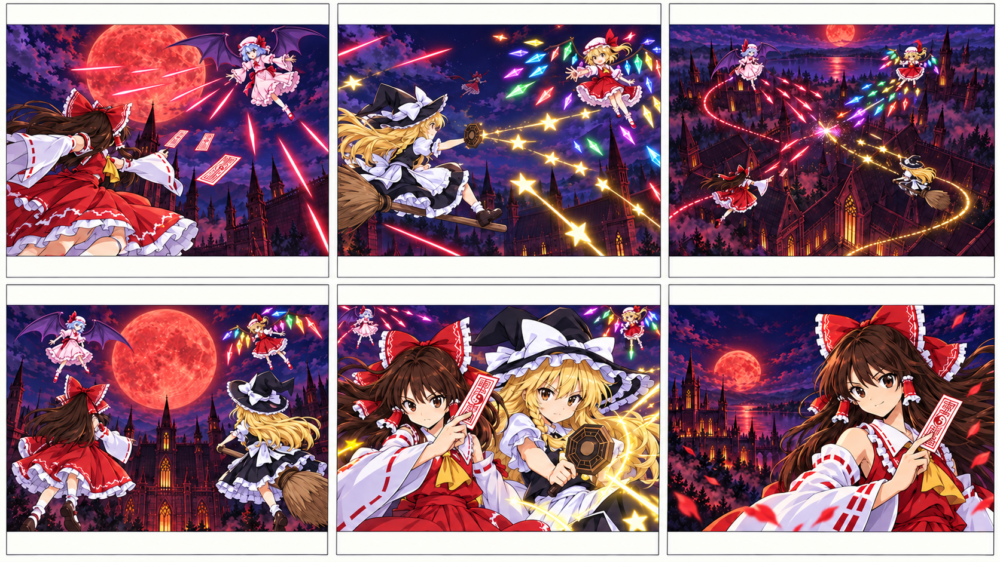
参照画像の投入順
Picture 1characters-01-heroes.pngPicture 2 characters-05-scarlet-sisters-corrected.pngPicture 3
characters-05-scarlet-sisters-corrected.pngPicture 3
characters-01-heroes.pngPicture 2characters-05-scarlet-sisters-corrected.pngPicture 3{kind=link}
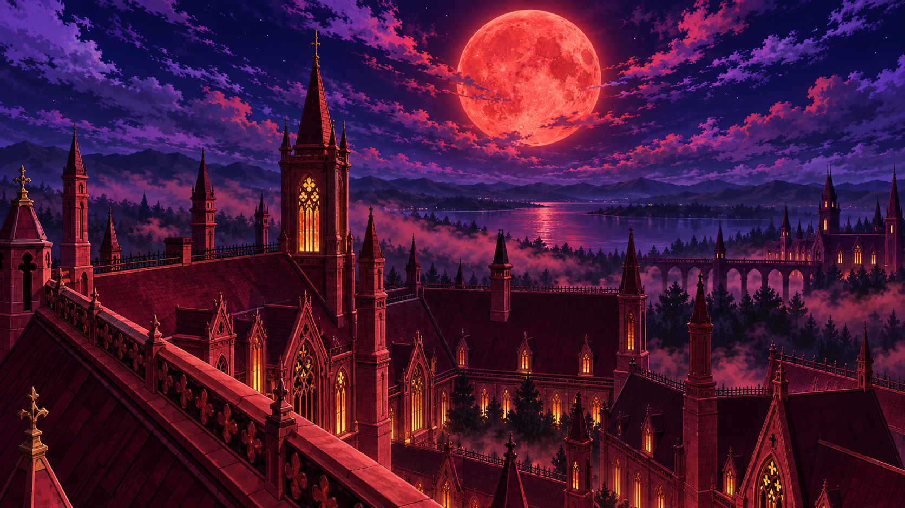
background-04-scarlet-roof.pngPicture 4storyboard-04-clean-v2.pngPicture 5{kind=link}
{kind=link}
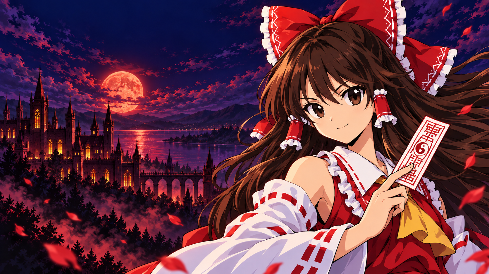
title-bridge.pngEnglish · 投入用
subject_definitions: <Subject 1> is Reimu, top row of <Picture 1>: brown eyes and long chestnut hair, large red-white bow, red shrine dress, detached white sleeves and yellow necktie; she flies and uses talismans. <Subject 2> is Marisa, bottom row of <Picture 1>: blonde side braid, black hat with white bow, black-white apron dress, broom and octagonal focus. <Subject 3> is Remilia Scarlet, top row of <Picture 2>: short light-blue hair, red eyes, pale pink frilled cap and dress, crimson bows and exactly one pair of purple membranous bat wings. <Subject 4> is Flandre Scarlet, bottom row of <Picture 2>: blonde hair with one side ponytail, red eyes, white cap with red bow, red dress and yellow necktie, dark wing spars with hanging rainbow crystals. Her wings never become membranes. <Subject 5> is the red Gothic mansion roof and scarlet-moon sky from <Picture 3>. <Picture 4> is the clean six-panel visual board for [Shot 1] through [Shot 6], read left-to-right across the top row, then the bottom row. Use it for composition and subject placement. The written shot descriptions supply camera motion, action and timing. <Picture 5> is the final-frame composition anchor for [Shot 6]: Reimu close on the right, moon and mansion on the left, clear upper-left space. It contains no title lettering; use it at the end of 00:10.000. summary: [reference generation + keyframe completion] Exactly 10.000 seconds, 16:9, completing the 40-second opening. <Subject 1> and <Subject 2> trade airborne attacks with <Subject 3> and <Subject 4> above <Subject 5>, then face them in a poised four-person standoff. Follow <Picture 4>, converge on <Picture 5>, and leave the resolution to the game. Use the model sheets for each character’s identity and the clean six-panel board for composition. Every shot fills one 16:9 frame with the scene itself. Faces, anatomy and costumes remain consistent; each character appears once within the scene. Reimu and Marisa retain calf-length skirts from the model sheet even in flight. Use fast exchanges in the first half, a sudden deceleration into the standoff, then a final half-second settled composition. retention_analysis: <Subject 1> (all shots): fully_preserved - preserve appearance and talisman hand; title-bridge close-up remains the same character. <Subject 2> ([Shot 2] through [Shot 5]): fully_preserved - preserve hat, braid, broom and focus. <Subject 3> ([Shot 1], [Shot 3], [Shot 4], [Shot 5]): fully_preserved - light-blue hair, pink costume and purple membrane wings stay distinct. <Subject 4> ([Shot 2], [Shot 3], [Shot 4], [Shot 5]): fully_preserved - blonde hair, scarlet costume and rainbow crystal wing structures stay distinct. <Subject 5> (all shots): fully_preserved - preserve red masonry, roof silhouettes and scarlet moon. <Picture 4> (six-shot planning reference): partially_preserved - Keep panel order and action staging; use the written shot directions for exact camera height, motion and timing, and the model sheets for costume length. <Picture 5> ([Shot 6] final frame): fully_preserved - reach the face, talisman and mansion placement while leaving the logo area empty. detailed_description: Hand-drawn 2D anime, crisp cel shadows, painted backgrounds, controlled motion blur, readable flight lanes. Single-screen 16:9. [Shot 1] A scarlet cloud wisp clears into a low oblique wide shot above <Subject 5>'s roof. <Subject 3> hovers upper-right against the scarlet moon, light-blue hair and pink frills rim-lit, purple bat wings spread. She sweeps an arm and launches a curved row of crimson spear-shaped light bullets. <Subject 1> enters lower-left, slips upward through a gap and returns a curling talisman stream. Track beside Reimu while the roof falls away below. Layer high wind, a spear rush and snapping paper. [Shot 2] At 00:02.000, the camera cuts across the same battle axis to <Subject 2> banking her broom above another roof ridge. <Subject 4> floats opposite, her blonde side ponytail and dangling rainbow crystals unmistakable. Flandre flicks her hand and sends a prismatic fan outward. Marisa rolls a quarter-turn around its edge and answers with one short golden star-lance from the focus. Reimu remains a small red silhouette crossing the deep background. The camera tracks with Marisa; crystalline clicks meet a brief magical hiss. [Shot 3] At 00:04.000, the camera cuts to a high, wide view of all four, heroines near, sisters far. <Subject 1> and <Subject 2> cross on vertically separated curves, producing a loose red-and-gold double helix. <Subject 3>'s crimson bullets and <Subject 4>'s prismatic bullets intersect their counterfire at the center, breaking into a compact halo of sparks. Pull out rapidly to reveal the pattern, keeping every body outside the impact. No one is defeated; the roof is untouched. [Shot 4] At 00:05.500, the camera cuts behind the heroines, Reimu lower-left and Marisa lower-right on her broom. They slow to a controlled hover, facing Remilia upper-left and Flandre upper-right beneath the moon. The camera arcs 20 degrees in 0.400 seconds, then settles. Preserve four separate silhouettes: cloth and hair move, bat membranes flex, rainbow crystals hang from rigid spars. The remaining bullets drift outward, leaving a clear space between both sides. Wind and fading sparks carry the tension. [Shot 5] At 00:07.500, the camera cuts to a closer reverse angle on both heroines, with distant sister wing silhouettes. <Subject 1> holds a talisman beside her cheek and narrows her eyes; <Subject 2> already has her focus raised, flashing a closed-mouth grin. Push in slightly as red and gold reflections pass over their faces. Hold readiness rather than striking another blow. A single paper snap and a small nonmusical magical crackle mark the pose. [Shot 6] At 00:08.500, the camera cuts to a close composition converging on <Picture 5>: Reimu occupies the right half, her face unobstructed and her raised talisman angled inward; the moonlit mansion lies on the left. Marisa and the sisters are outside this tighter framing. Settle all camera motion by 00:09.500, retaining gentle hair movement until 00:10.000. Keep the upper-left clear, with no generated title or letters. This quiet final image prepares a direct editorial cut to the existing game title screen. overall_soundscape: High-altitude wind, cloth, paper snaps, short magical bursts, prism clicks and fading sparks. Reduce projectile sounds during the standoff and end on a soft wind tail. No dialogue, shouts, laughter, narration, vocals, music, melody, rhythmic percussion or orchestral impact. non_diegetic_music: None. No background music, score, song or musical accompaniment at any point.
日本語 · 確認用
subject_definitions: <Subject 1> は <Picture 1> 上段の霊夢。茶色の瞳と長い栗色の髪、大きな赤白リボン、赤い巫女服、白い分離袖、黄色の胸元の結び。自力飛行と札。 <Subject 2> は <Picture 1> 下段の魔理沙。金髪の片側編み込み、白リボン付き黒帽子、黒白のエプロン衣装、箒と八角形の魔法の道具。 <Subject 3> は <Picture 2> 上段のレミリア・スカーレット。短い水色髪、赤い瞳、淡桃色のフリル帽と衣装、紅いリボン、左右一対の紫の膜状のコウモリ翼。 <Subject 4> は <Picture 2> 下段のフランドール・スカーレット。金髪と片側のポニーテール、赤い瞳、赤リボン付き白帽、赤い服と黄色の胸元の結び、虹色の結晶を下げた暗色の翼の枝。膜状の翼へ変えない。 <Subject 5> は <Picture 3> の赤いゴシック様式の館の屋根と紅い月の空。 <Picture 4> は [Shot 1]〜[Shot 6] に対応するクリーンな6コマ画像。上段左から右、下段左から右の順で読む。構図と人物配置を参照し、カメラの動き・動作・時刻は各カットの文章で指定する。 <Picture 5> は [Shot 6] の最終フレーム構図。右に霊夢の寄り、左に月と館、左上は空間を残す。文字は含めず、00:10.000の終端でこの構図へ到達する。 summary: [reference generation + keyframe completion] 全40秒の最終部を16:9・正確に10.000秒で生成。<Subject 5> の上で <Subject 1>・<Subject 2> が <Subject 3>・<Subject 4> と空中で攻撃を交わし、4人の対峙へ至る。<Picture 4> に沿い、<Picture 5> へ着地させ、決着はゲームへ委ねる。 設定画は各人物の同一性、クリーンな6コマ画像は構図の参照に使う。各カットを16:9いっぱいの一つの情景として描く。顔、人体、衣装を維持し、一つの場面の各人物は一人ずつにする。 霊夢と魔理沙のスカートは、飛行中も三面図にあるふくらはぎ丈で固定する。 前半の連撃から5.500秒で急減速。月下の対峙を見せ、9.500秒から最後の0.500秒は画角を固定する。 retention_analysis: <Subject 1>（全カット）：fully_preserved - 顔と札を持つ手を保ち、タイトル接続の寄りでも同一人物にする。 <Subject 2>（[Shot 2]〜[Shot 5]）：fully_preserved - 帽子、編み込み、箒、魔法の道具を保つ。 <Subject 3>（[Shot 1], [Shot 3], [Shot 4], [Shot 5]）：fully_preserved - 水色髪、桃色の服、紫の膜の翼を区別して維持。 <Subject 4>（[Shot 2], [Shot 3], [Shot 4], [Shot 5]）：fully_preserved - 金髪、赤い服、虹色結晶の翼の構造を区別して維持。 <Subject 5>（全カット）：fully_preserved - 赤い壁、屋根のシルエット、紅い月を保つ。 <Picture 4>（6カットの演出参照）：partially_preserved - コマ順と動作配置を保つ。正確なカメラの高さ・動き・時刻は各カットの文章を優先し、衣装の丈は三面図に合わせる。 <Picture 5>（[Shot 6] 最終フレーム）：fully_preserved - 顔、札、館の配置へ到達し、ロゴ用の空間を空ける。 detailed_description: 手描き2Dアニメ。明瞭なセル影、描き込んだ背景、制御した動体ぼけ、読める飛行の通路。16:9の単一画面。 [Shot 1] 紅い雲の筋が晴れ、<Subject 5> の屋根上を低い斜め位置から見るワイド。紅い月を背に右上へ浮く <Subject 3> の水色髪、桃色のフリル、開いた紫のコウモリ翼を縁光で見せる。腕を払い、槍形の紅い光弾を曲線状に放つ。<Subject 1> は左下から入り、隙間を上へ抜け、巻き上がる札の列を返す。霊夢と並走し、屋根を下へ遠ざける。高空の風、槍の風切り、札の音。 [Shot 2] At 00:02.000, 同じ敵味方の軸を保ち、別の屋根の上で箒を傾ける <Subject 2> へ切り替える。正面に浮く <Subject 4> の金髪の横ポニーテールと吊られた虹色結晶を明瞭に見せる。フランドールが指を振り、プリズム状の扇形弾を放つ。魔理沙は端を四分の一回転で回り込み、手の道具から短い金色の星の光槍を一度返す。霊夢は奥を横切る小さな赤い姿で見せる。魔理沙に追従し、結晶音と短い魔力音。 [Shot 3] At 00:04.000, 4人を高い位置から見るワイドへ切り替える。二人を手前、姉妹を奥へ保つ。<Subject 1> と <Subject 2> は高低差のある曲線ですれ違い、緩い赤と金の二重螺旋を描く。<Subject 3> の紅弾と <Subject 4> の虹色弾が中央で反撃と交わり、小さな火花の環へ変わる。カメラが素早く引いて模様を見せ、全員の体を衝突点の外へ置く。誰も撃破せず、屋根も壊さない。 [Shot 4] At 00:05.500, 霊夢を左下、箒に乗る魔理沙を右下に置いた背面へ切り替える。二人が減速して浮き、月の下の左上のレミリア、右上のフランドールと対峙する。カメラは0.400秒で20度の弧を描いて止まり、その後は同じ軸で対峙を見せる。4人を別々の輪郭で描き、衣服と髪を揺らし、膜の翼をしならせ、虹色結晶は硬い枝から下げる。残弾は外へ流れ、両陣営の間を空ける。風と消える火花で緊張を保つ。 [Shot 5] At 00:07.500, 二人の正面の寄りへ切り替え、姉妹の翼の端が遠景の両隅を囲む。<Subject 1> は頬の横に札を構えたまま目を細める。<Subject 2> も道具を構えた状態で、口を閉じた控えめな笑みを一瞬見せる。カメラが少し寄り、赤と金の反射を顔へ流す。追加の攻撃はせず、これから挑む構えを見せる。一度の札の音と旋律を持たない小さな魔力音。 [Shot 6] At 00:08.500, <Picture 5> へ収束する寄りへ切り替える。右半分に霊夢、顔を隠さず、札を内向きに傾ける。左に月明かりの館。狭い画角なので魔理沙と姉妹は画面外。00:09.500までにカメラを止め、00:10.000までは髪の小さな動きだけ残す。左上を空け、タイトルや文字を生成しない。この落ち着いた最終画面から、編集時に既存のゲームタイトルへ直接つなぐ。 overall_soundscape: 高空の風、衣擦れ、札、短い魔力の放出、プリズムの硬い音、消える火花。対峙中は弾の音を減らし、柔らかな風の余韻で終える。台詞、掛け声、笑い声、ナレーション、歌声、音楽、旋律、打楽器のリズム、オーケストラの決め音は入れない。 non_diegetic_music: なし。全編を通してBGM、劇伴、歌、音楽の伴奏を入れない。
FINAL FRAME → TITLE SCREEN
対峙の余韻から、ゲームへ。
最後は霊夢を右、紅魔館を左へ。生成映像にはロゴを描かせず、40秒の直後に既存タイトル画面へつなぎます。
{kind=link}
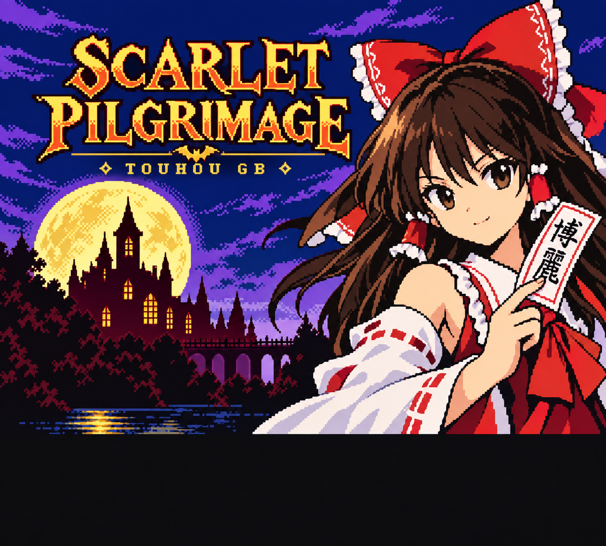